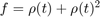
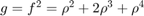

Defining Basis Functions
Contents
Introduction
Basis functions are needed for rate-bounded LPV analysis and synthesis in the grid-based LPV framework. These are functions of the time-varying parameter present in the system being analyzed. Basis functions are specified using the basis object. To construct a basis function object the user provides a pmat or pgrid that defines the value of the basis function at each grid-point in the domain. Furthermore, the user provides the value of the partial derivative of the basis function with regard to each parameter in the system, at each point in the domain.
Constructing Basis Functions
Lets construct a basis object that describes the basis function .
% Define the time-varying parameter rho rho = pgrid('rho',1:5)
Gridded real parameter "rho" with 5 points in [1,5] and rate bounds [-Inf,Inf].
Define the basis function as a pmat:
f = rho + rho^2
PMAT with 1 rows and 1 columns. The PMAT consists of the following blocks: rho: Gridded real, 5 points in [1,5], rate bounds [-Inf,Inf].
Define the value of the partial derivative of f with respect to rho:
pf = 1+2*rho
PMAT with 1 rows and 1 columns. The PMAT consists of the following blocks: rho: Gridded real, 5 points in [1,5], rate bounds [-Inf,Inf].
Now we can define the basis object for this basis function. The first argument to basis is the value of the basis function. The second argument is the value of the partial derivative:
bf = basis(f,pf)
BASIS: 1 basis functions and 1 partial derivatives with respect to 1 PGRID The BASIS object consists of the following blocks: rho: Gridded real, 5 points in [1,5]
Basic Arithmetic for Basis Functions
The basis object includes methods for basic arithmetic. Hence, an initial basis object can be used to construct others. Lets define another basis object that describes the basis function: .
bg = bf^2
BASIS: 1 basis functions and 1 partial derivatives with respect to 1 PGRID The BASIS object consists of the following blocks: rho: Gridded real, 5 points in [1,5]
Note that there is no need to specify the partial derivatives for the new system g. These are automatically computed for g using the data in f and the chain rule of differentiation.
Aggregating Basis Functions
For analysis and synthesis, a set of basis functions can be groupped together using horzcar or vertcat:
BF = [bf,bg]
BASIS: 2 basis functions and 1 partial derivatives with respect to 1 PGRID The BASIS object consists of the following blocks: rho: Gridded real, 5 points in [1,5]
In this case the basis object BF describes the two basis functions and .